Comparativa de modelos de clasificación no paramétricos frente modelos de elección discreta convencionales
Una aplicación con datos de percepción de factores de riesgo oncológicos
Miguel Ángel Negrín, Jaime Pinilla, Christian González, Francisco J. Vázquez
Departamento de Métodos Cuantitativos en Economía y Gestión. Universidad de Las Palmas de Gran Canaria
Barcelona, 7 septiembre 2017
Índice de contenidos
- Aprendizaje automático
- Datos
- Análisis descriptivo
- Resultados
- Conclusiones
Aprendizaje automático
Aprendizaje automático
- Ventajas aprendizaje automático
- Algoritmos computacionales que se mejoran automáticamente a través de la experiencia.
- Modelos no paramétricos.
- Pueden detectar relaciones no lineales entre las variables
- Tienen la habilidad de detectar todas la posibles relaciones entre las variables predictivas
- Limitaciones de los modelos Logit
Se asume que los individuos tienen la misma respuesta ante una variación de las explicativas
- El cociente de las probabilidades de elección de dos alternativas no depende de las restantes alternativas
No se admiten correlación entre las observaciones.
Redes neuronales
- Sistema no paramétrico que simula una red neuronal biológica.
- Es una función matemática que obtiene una salida en función de unas entradas. Esta función se puede descomponer en diferentes funciones que representarían cada una de las capas de la red.
- Aunque hay diferentes tipos de RNA, se trabajó con una red feedfoward donde los parámetros se ajustaron mediante aprendizaje supervisado
- Ventajas:
- Habilidad de aprender mediante la etapa de aprendizaje
- Crea su propia representación de la información.
- Desventajas
- La interpretación de los parámetros no es inmediata.
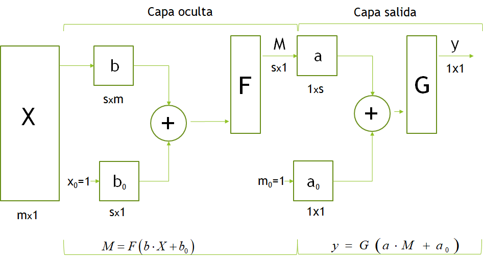
k-Nearest Neighbour
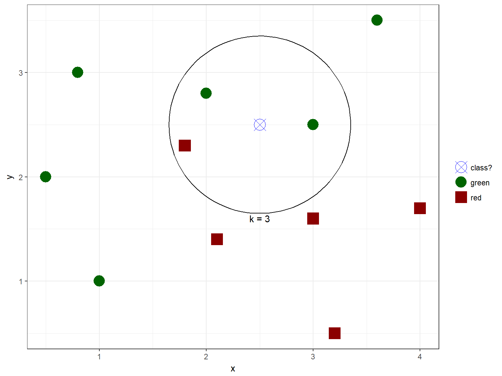
Naive Bayes
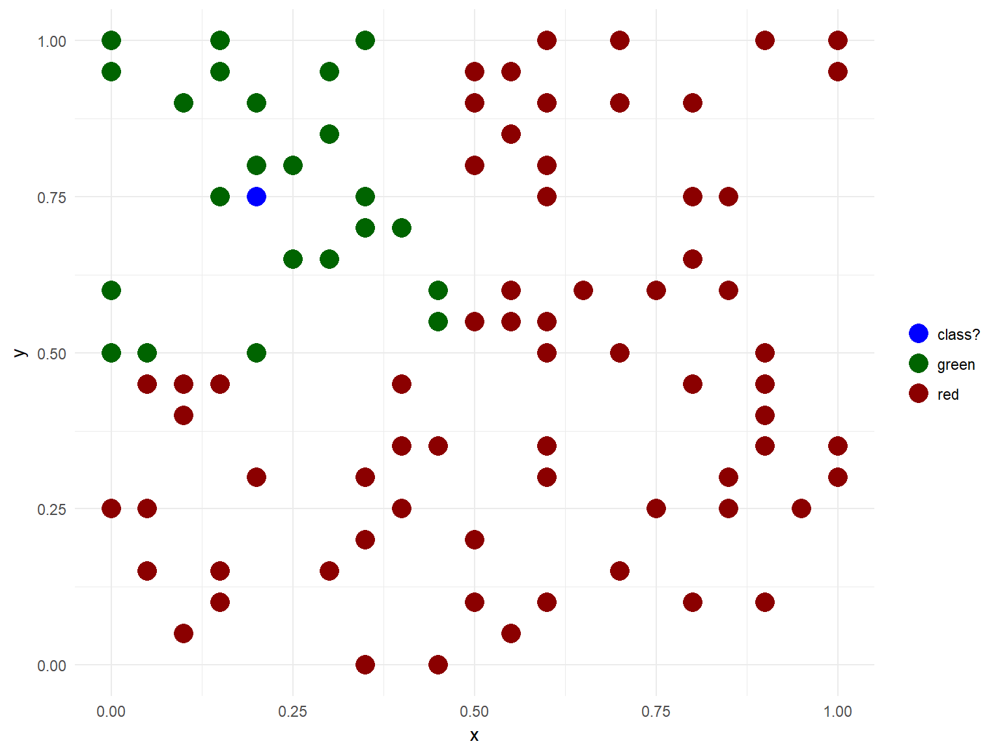
Árbol de decisión
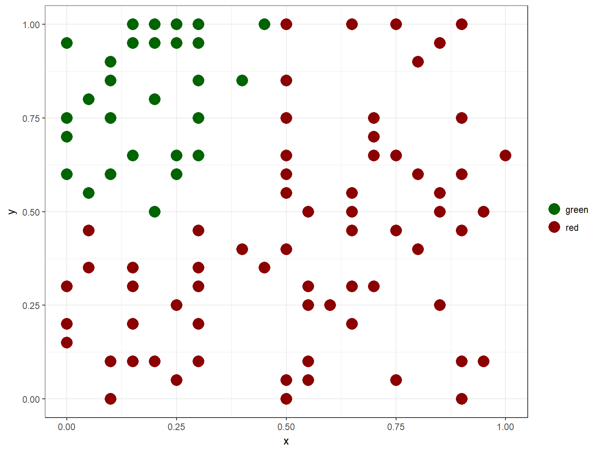
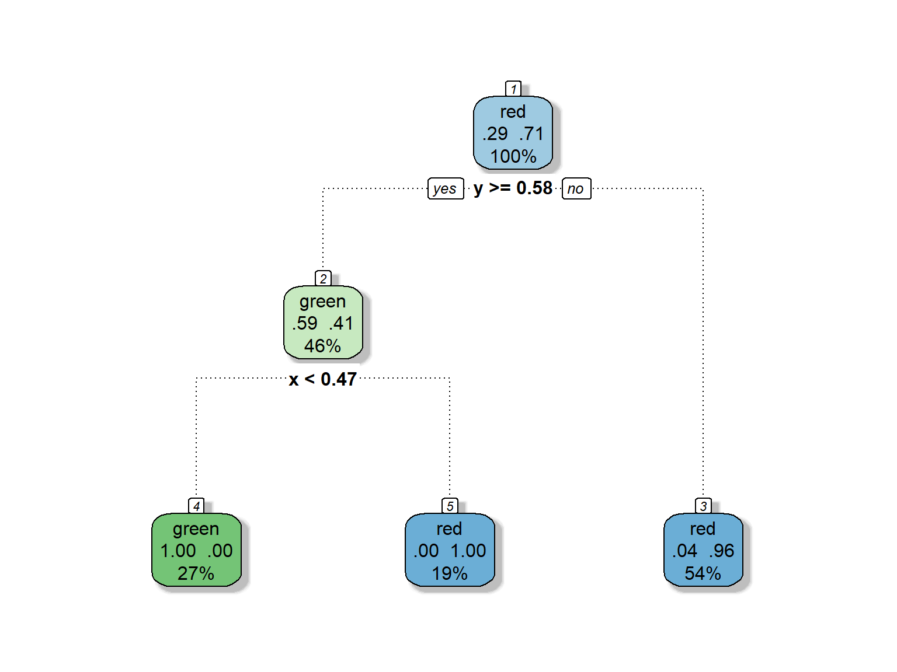
Random Forest
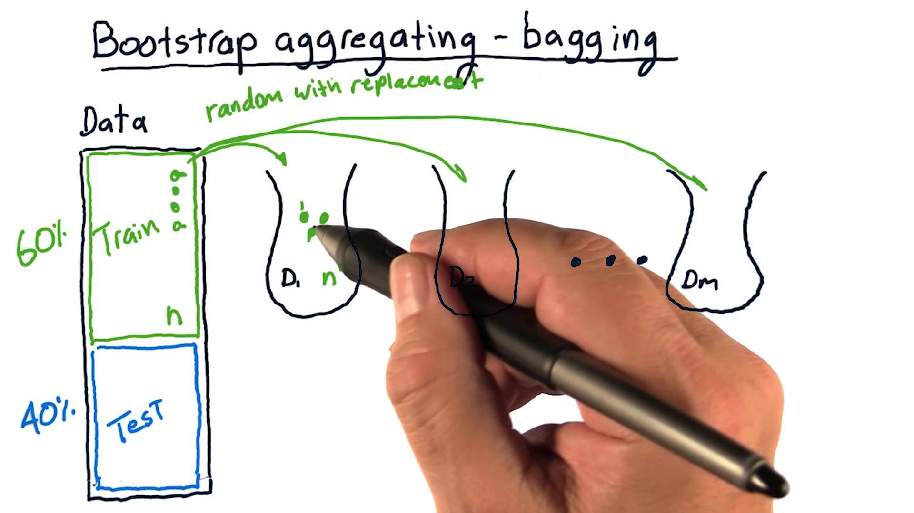
Xgboost

Cross Validation

Hiperparámetros
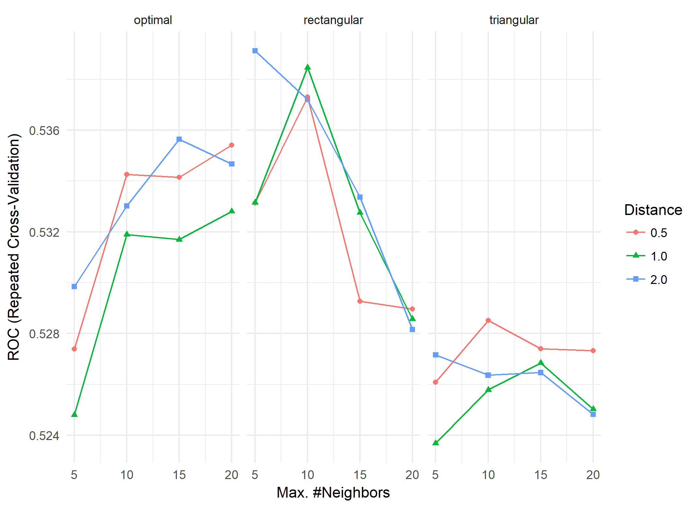
Datos
Datos
Sanz-Barbero, B., Prieto-Flores, M. E., Otero-García, L., Abt-Sacks, A., Bernal, M., & Cambas, N. (2014). Perception of risk factors for cancer in the Spanish population. Gaceta sanitaria, 28(2), 137-145.
Analizar la percepción de la población española sobre la importancia de los factores de riesgo de cáncer.
Datos(2)
OncoBarómetro: Base de datos poblacional representativa de la población española mayor de 18 años, no institucionalizada, que recoge información sobre los conocimientos, las actitudes y las percepciones en torno al cáncer.
Diseño del cuestionario: Observatorio del Cáncer de la Asociación Española Contra el Cáncer y el Centro de Investigaciones Sociológicas (CIS).
Trabajo de campo: noviembre y diciembre de 2010
Datos (3)
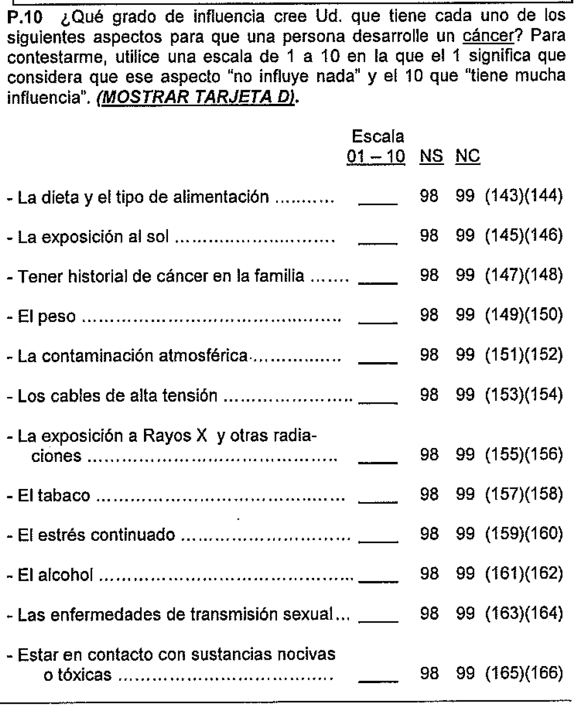
Análisis descriptivo
Análisis descriptivo
| Variables exógenas | Atributos |
|---|---|
| Sexo | Mujer, Hombre |
| Edad | [18,35), [35,55), [55,75), [75,93] |
| País | Otro país, España |
| Estudios | Sin estudios/<5 años escoralizado, Primaria, Secundaria/formación profesional, Superior |
| Salud percibida | Muy mala/mala/regular, Muy buena/buena |
| Estilo de vida | Poco saludable/nada saludable, Muy saludable/bastante saludable |
| Enfermedades cancerosas | No, Sí |
| Persona cercana con cancer | No, Sí |
| Recepción información | No, Sí |
| Recomendación | No, Sí |
| Síntomas | No, Sí |
| Temor | No, Sí |
| Riesgo | Bajo/muy bajo, Muy alto/alto, NS/NC |
| Cancer problema | Poco grave, Grave/muy grave |
Análisis descriptivo (2)
- Variables exógenas: Percibe […] como factor de riesgo de padecer cancer
- Tabaco, alcohol, exposición al sol
- Dieta, peso, ETS, historial de cáncer
- Radiaciones, contacto con sustancias nocivas, contaminación
tabaco ~ sexo + edad + pais + estudios + saludpercibida + estilovida + enfcancerosas + cercanacancer + recepcion + recomendacion + sintomas + temor + riesgo + cancerproblemaTabaco como factor de riesgo de cáncer
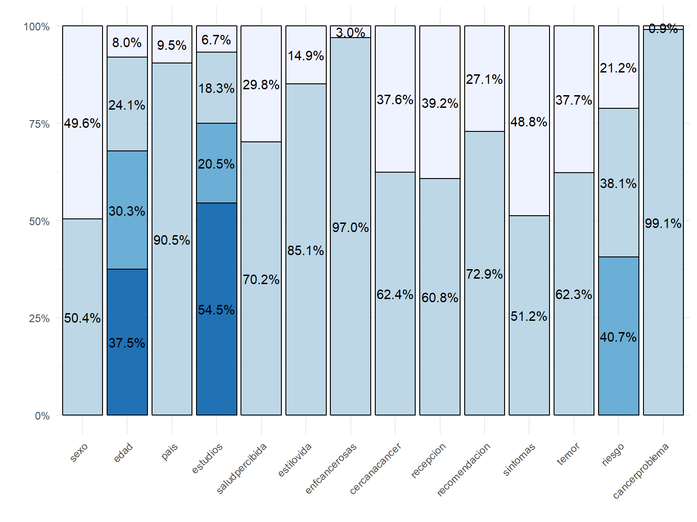
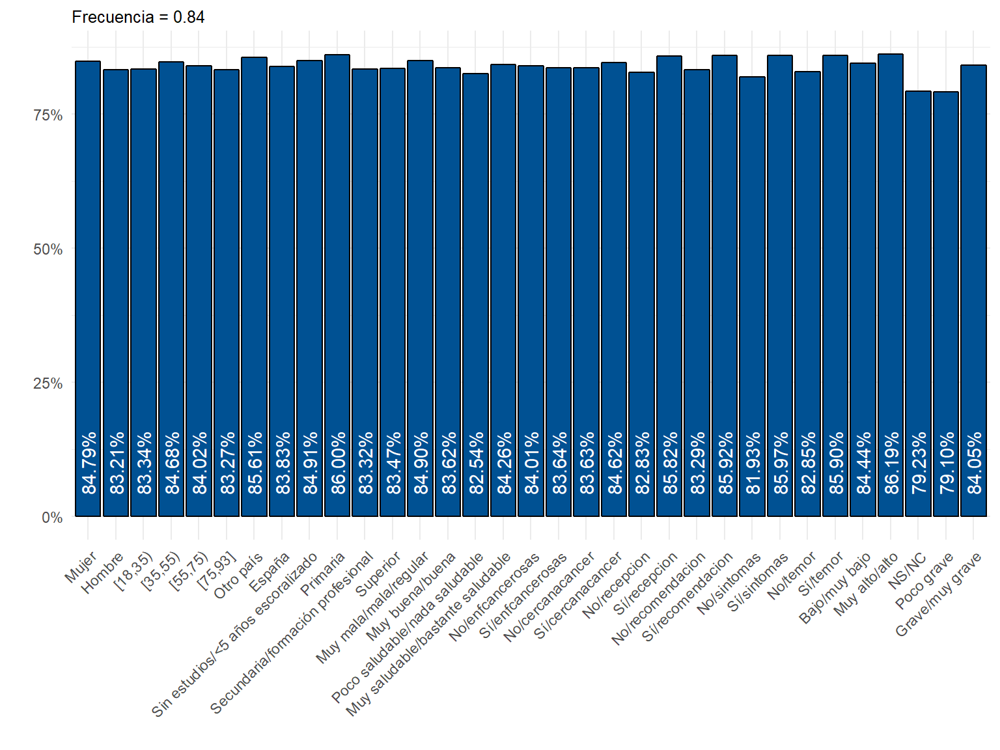
Resultados
Resultados
| Algoritmo | Precisión | Sensibilidad | Especificidad | AUC |
|---|---|---|---|---|
| Logística | 0.5684 | 0.5763 | 0.5265 | 0.5314 |
| ANN | 0.6424 | 0.6940 | 0.3710 | 0.5414 |
| KNN | 0.6164 | 0.6516 | 0.4311 | 0.5325 |
| Naive Bayes | 0.5966 | 0.6241 | 0.4523 | 0.5382 |
| Random Forest | 0.6328 | 0.6846 | 0.3604 | 0.5225 |
| XGBoost | 0.6497 | 0.6947 | 0.4134 | 0.5541 |
Significación variables LOGIT
| variable | Significación |
|---|---|
| paisEspaña | . |
| estudios.L | . |
| estudios.C | * |
saludpercibidaMuy buena/buena |
. |
| enfcancerosasSí | . |
| recepcionSí | ** |
| recomendacionSí | . |
| sintomasSí | ** |
| temorSí | ** |
riesgoMuy alto/alto |
. |
riesgoNS/NC |
*** |
Importancia variables NN
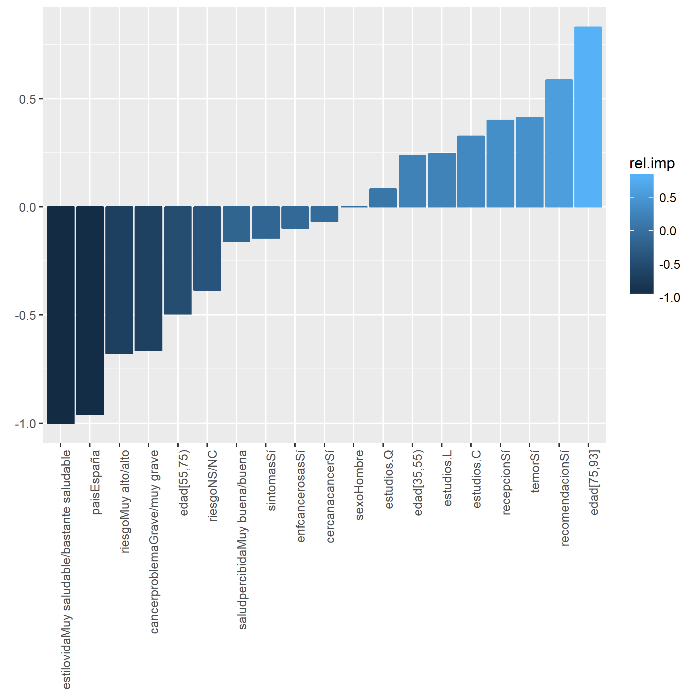
Importancia variables RF
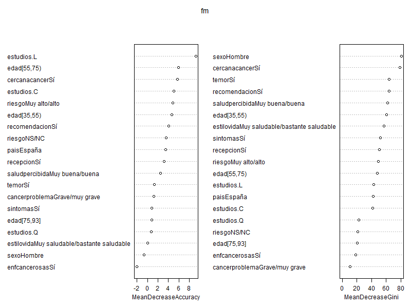
Importancia variables XGBoost
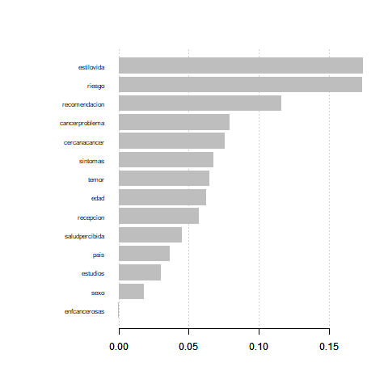
Clases desbalanceadas
- Ponderar las clases
- Down-sampling
- Up-sampling
Curvas ROC
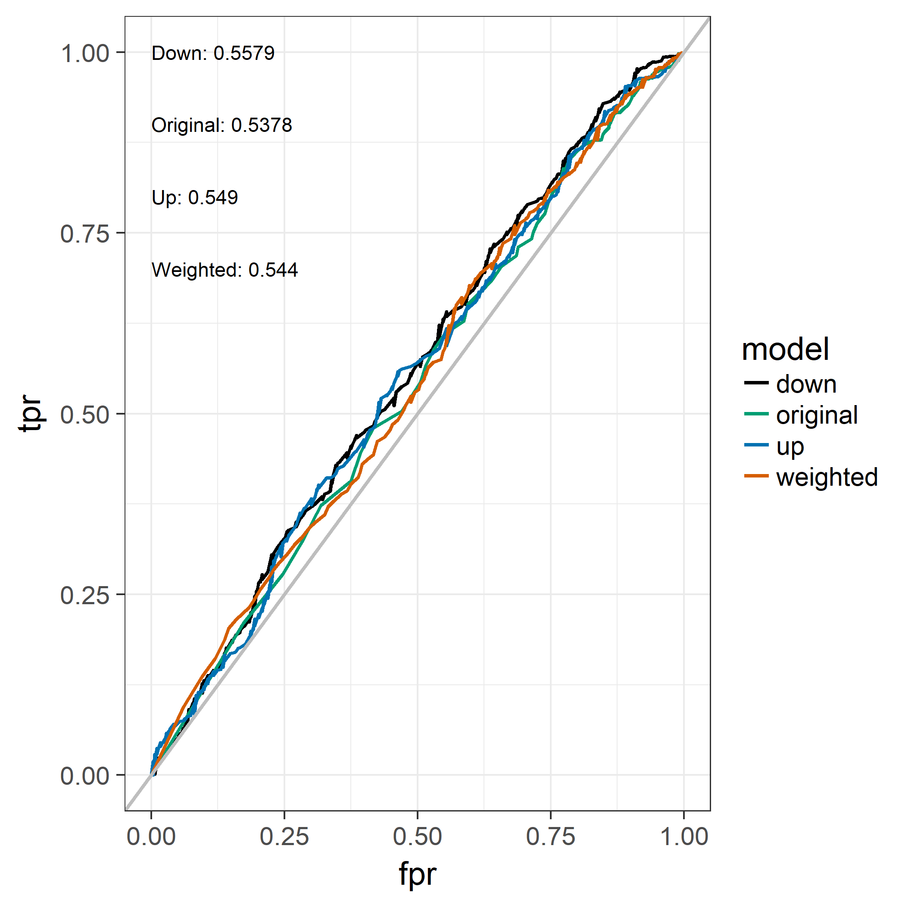
Conclusiones
Conclusiones
- Se presentarosn 5 modelos basados en el aprendizaje automático
- Redes Neuronales
- K-nearest neighbours
- Naive Bayes
- Random Forest
- XGBoost
Estos algoritmos superan al modelo de elección discreta Logit en términos de precisión y AUC
Los modelos basados en el aprendizaje automático permiten la computación en paralelo por lo que son rápidos a la hora de manejar gran cantidad de datos.
Comparativa de modelos de clasificación no paramétricos frente modelos de elección discreta convencionales
```